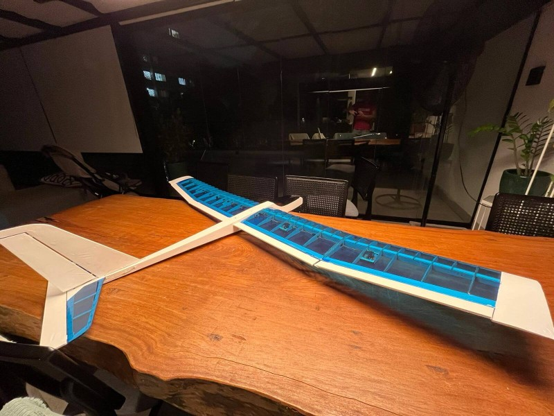
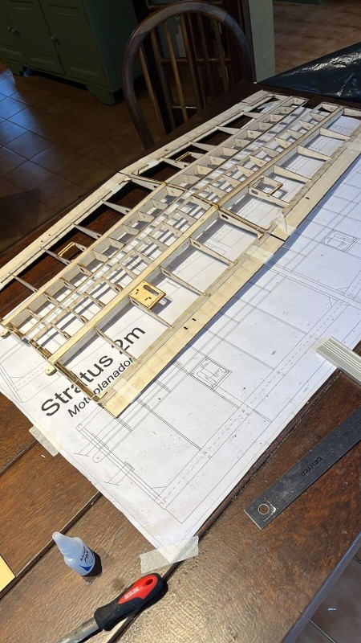
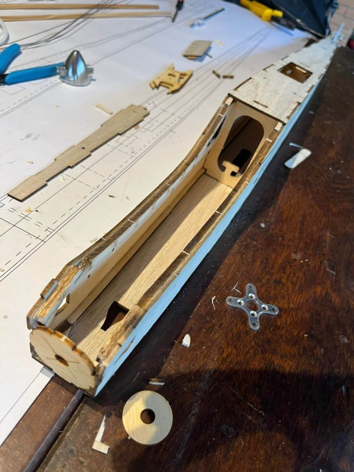
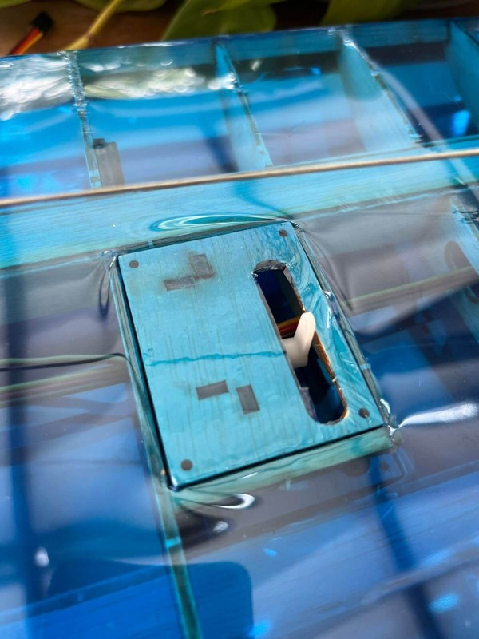
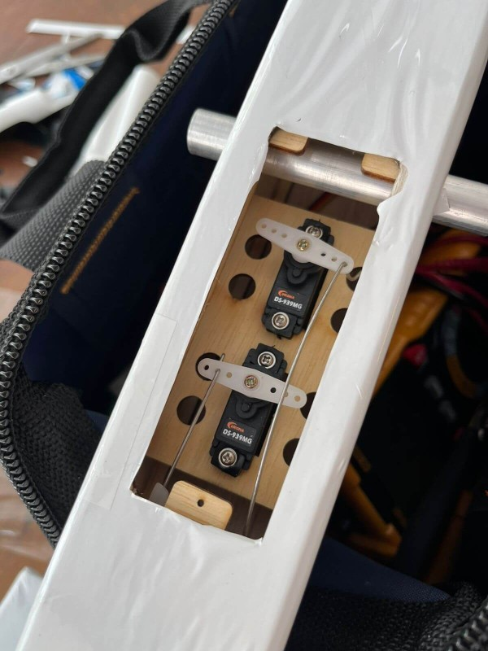
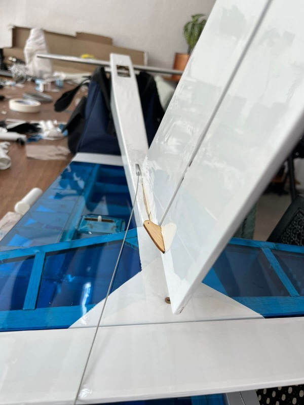
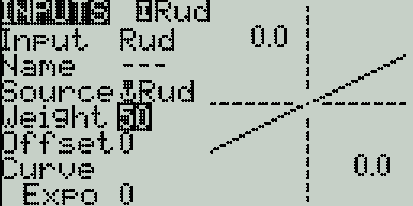

The Stratus 2M[1] is a Brazilian RC motorized glider, developed by Fabricio Nascimento and available cuted in balsa throug his own shop, the Flying Circus website. The project consist of a bi-partitioned wing that has a 2 meter wingspan that can be used with a small eletric motor. The configuration details is as follows:
| Airplane Detail | Characteristics |
|---|---|
| Airplane Type | Motorized Glider |
| Structure | Majorly Balsa wood and compensate. Wing connector in Aluminium. |
| Wingspan | 200 cm |
| Length | 122 cm |
| Wing Area | 45 dm² |
| Weight | 990g (with 3S battery 2200 mAh) |
| Wing Loading | 22g/dm² |
| Flaps | YES |
| Engine (Optional) | Suggested Eletric 100W~150W. Could be 2822 motor. I've built with the A2212/13T. 30A ESC with 5A BEC |
| Props (Optional) | Depends on Motor, but needs to be folding with 1,5" spinner. I've used the 10x6 |
| Battery (For Motor) | 3s 2200mAh |
| Servos | 4 if no flaps used. 6 with Flaps. Recommended Corona 2.7kg/.13sec - Metal Gear - DS-939MG |
| Servo Placement | 4 in Wings (with Flaps), 2 in Fuselage Center. |
| Receiver | Radiomaster ER6 2.4G 6CH 100mw CRSF PWM Receiver |
| Covering | Around 3 meters for the wings if you like slack. 2 meter for fuselage |
| Additional Obs | NEED Guiding tubes and long pushrods + 50cm Extensions for ailerons |
| Building Dificulty | Easy to Intermediate. Guiding materials are clear but misses some details for beginners |
This glider is a docile airplane for new entrands on the hobbie, both during costruction, which allow for some minor mistakes, but also during flight, which sustains a predictable behavior and is relaxing enough on a calm day. I believe this is what makes the plane so delighfull to own. Fabricio states this in his own words:
"The flight is extremely gentle, with slow but precise controls. The power is enough so that, in one minute of accelerated flight, you can reach an altitude to cut the motor and glide for a good while. If there is a thermal, this flight can last for hours."
- Fabricio Nascimento[1]

The size of the airplane and the building process is designed in a way that utilizes poka-yoke[2] mechanisms and has markings on the wood. The only observation i have from those was that some of this laser markings were too shallow in some pieces, which then made them unreadable. Thanks to luck, they were just a few, and i could judge their correct position from their own size.
To start the build process, you'll have to follow a guide with some old pictures that are from a past version of the plane. This is one of the most confusing steps of the assembly, as some balsa parts even have different sizing and markings than the ones on the photos. This is normal during multiple iterations, but it would be good to have it updated once it a while. Although this is indeed a problem, paying attention to the process can help you not to mess up before gluing the pieces together.
This is a glider that also needs special care when building the wings, specially when putting their both pieces together (the part with the flaps and the part with the ailerons) given that the angle it has needs to match on both sides. One thing that I was able to do was to glue a spacer of wood to press both parts together, just to then drop a decent amount of CA glue on both parts. This helped me align the wings and remove almost all slack between them both.
For the rudder and elevator the construction is super simple, and you can just use the blueprints as a placeholder and glue everything together.

Building the fuselage is straight away and it does not require much effort, besides making sure that the motor placement and pushrod guides are correct. Depending on how you're going to use this glider, and the way you're going to place the motor, the're are different configurations for the front. I've decided to use a motor with an inverted axis, which required some motor modification but made a simpler and gave more room for internals.
Covering the wood from the wings using the Chinakote[3] is also challenging if you aim to do it in one piece, since there are angles on two axes all together. This made me go crazy over the idea of doing it in one piece. After some time and meters of the cover lost, I was able to get it done. If you end up streching too much, the cover can easly tear apart and ends up showing the wood, which is a big issue in this case. The way was to calmly go and heat with the iron the outskirts and leave more material than normal before the use of the heat gun for the final shrinking.
The electronics used on this project are simple for an RC plane, just make sure to use quality components. I've initially used the ExpressLRS generic 7ch receiver (sometimes called Cyclone) which ended up adding a ton of jittering to the servos. This receiver also needs a firmware mod if you want to use channel 6 and 7 in. PWM, which has a custom config that needs to be uploaded[4]. This made my life hell for a day and I ended up buing a less generic and more reliable ELRS receiver from Radiomaster, which then worked just fine.



Installing the servos on the wings are easy but they fit too tight if you add the rubber anti-vibration pads. In some of the cases, the horns get too close to the wood that is pre-cutted, and you need to do some minor adjustments. Otherwise wings are fine. The Servo placement on the middle of the fuselage for both the elevator and the rudder also has an easy instalation and does not have limited space. Builders that like to use wood as the linkage for these long systems do not have enough space on this build, and using extension rods with guiding tubes are better.

I've did some testing by connecting the battery and the servos at the generic ERLS receiver and from the beginning the servos started jittering. It does seems like it's a noise problem from the receiver electronics when a lot of servos get connected. If you remove two servos and use an "Y" connector for the flaps and the ailerons, it reduces noise. Given that a reliable ERLS receiver is way better than workarounds, I've chosen to keep the best one (and you probably should too)
Make sure to aways reduce theweight setting to around 50% on the Inputs tab of EdgeTX on the first bind for all channels so they don't overly extend the servos on a point that could initially damage the wood.
Given that this is my first build, I'm waiting for a nice day out on the country side for the first flight. Updates soon.
| ^ | [1] | STRATUS 2M Projected and Idealized by Fabricio Nascimento. |
| ^ | [2] | Poka Yoke or Mistake Proofing :: Overview. The Quality Portal. Retrieved Feb 16, 2026. |
| ^ | [3] | Chinakote is a generic platic covering used instead of the premmium MonoKote, made by Top Flite. |
| ^ | [4] | ELRS Generic 7ch JSON Mod - Accessed Feb 02, 2026. This Mod makes the 6th and 7th channel of the ELRS receiver work but for me it was still jittery and shitty. |